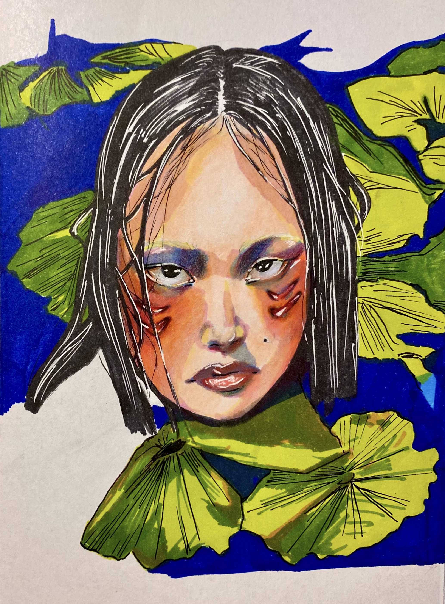
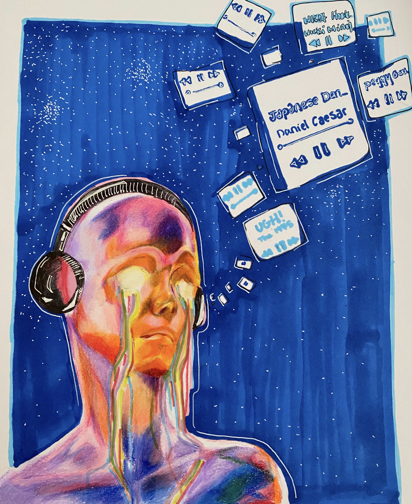
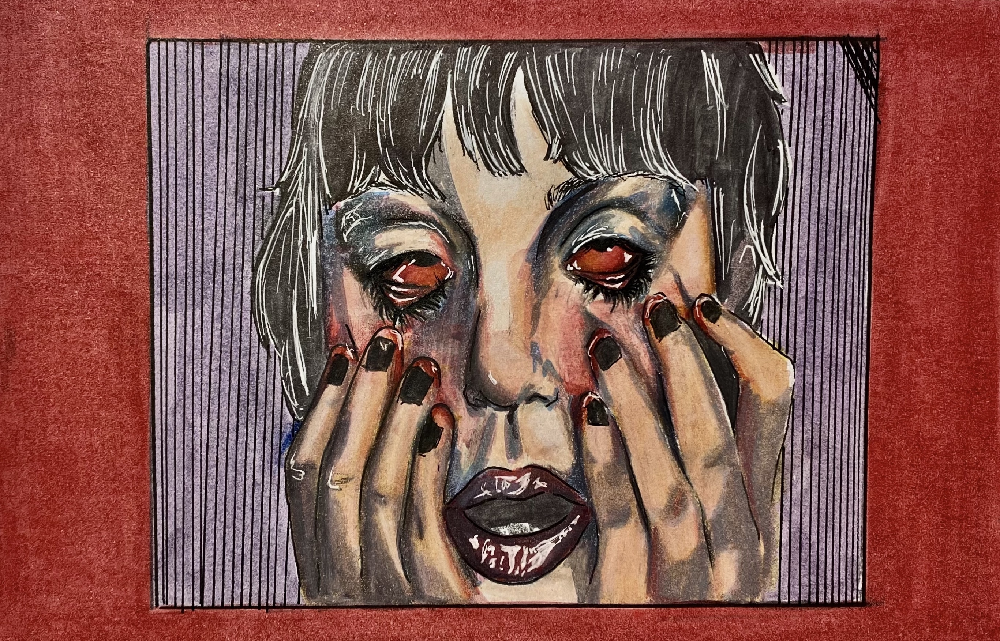
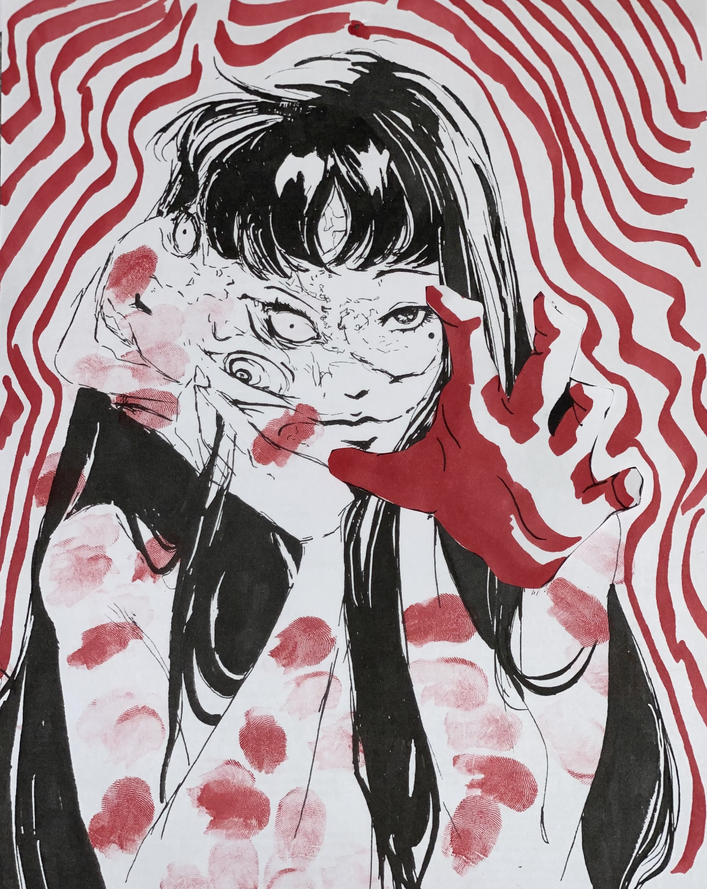

Emotions
   
This piece explores emotional contrast through expressive brushwork and soft color blending. Created using Procreate Dreams.
This piece explores emotional contrast through expressive brushwork and soft color blending. Created using Procreate Dreams.